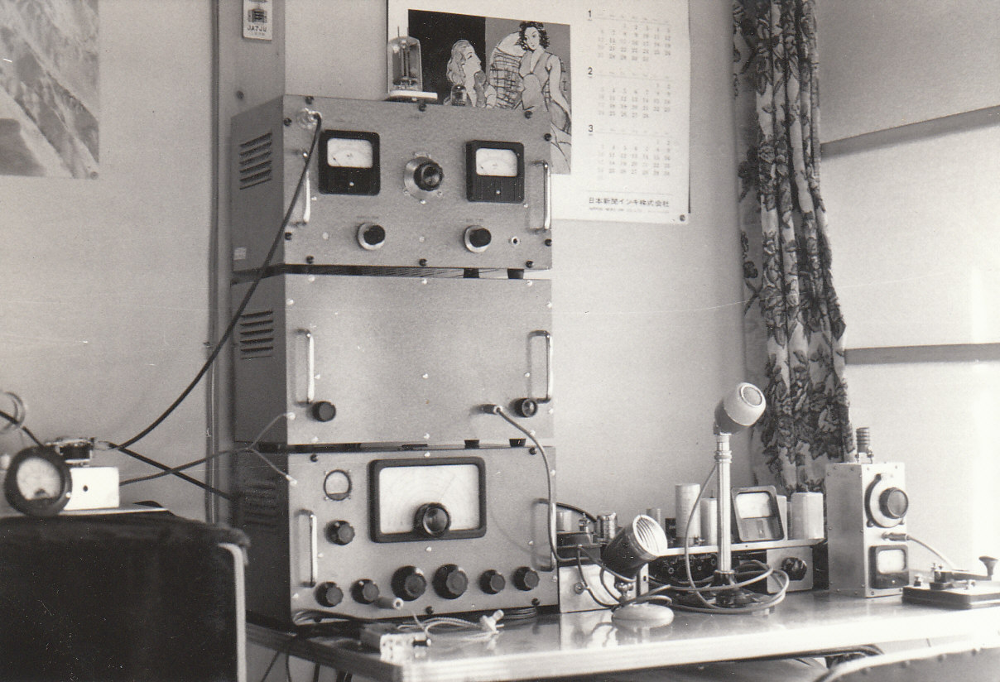
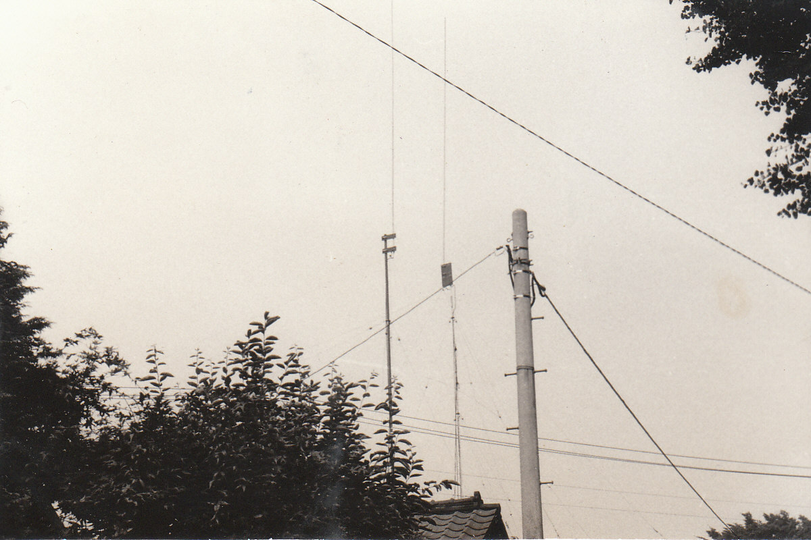

[DX Report Jan-Dec.1962] TIME:JST(UTC+0900) Report from JA7JU/1(PM95sq) ◎JA7JU(青森)からJA7JU/1(東京=後のJA1RJU)に運用場所が変更となり、当時のDXCC規定の"150マイル"を オーバーしたため、DXCCは最初から"やり直し"となった。 その後、この規定は変更され現在は同一カントリー内からのQSOが認められる事になった。 ◎1962年(昭和37年)から1966年(昭和41年)の6mの入感リポートは記録されて居りません。 
  東京都杉並区からHFの運用を始めた当初のシャックとアンテナ(14/21MHz・GP)
01-08.Jan.1962
◎50MCでは国内外のDXとのQSOは無し。
09.Jan.1962
UA4IF 13:50 14.- CW QSO (DXCC #008)
◎50MCでは国内外のDXとのQSOは無し。
10.Jan.1962
VR2EB 15:40 14.- CW QSO (DXCC #009)
VK2DO 16:55 14.- CW QSO (DXCC #010)
◎50MCでは国内外のDXとのQSOは無し。
11-31.Jan.1962
◎50MCでは国内外のDXとのQSOは無し。
|